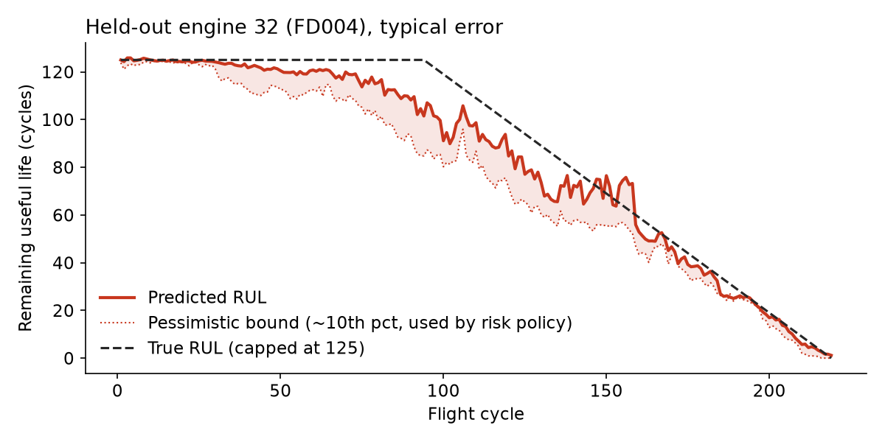

Fleet Readiness
Predict each engine's remaining life, then decide which engines to pull for maintenance when there are only a few slots per check. Results below come from a simulated 30-engine fleet built from NASA's C-MAPSS turbofan data, scored on engines the model never saw.
Pick the maintenance capacity
Slots per check: how many engines can go into maintenance every 10 flight cycles.
Cost per 1,000 fleet-cycles. Planned removal = 1 unit, in-service failure = 6 units. Mean of 10 simulated fleets.
How a policy decides
- Run to failure. Never pull an engine; fix it when it breaks.
- Time-based. Replace at a fixed age, the way calendar maintenance works. Oldest first when slots are short.
- Predicted RUL. Pull when the model's estimate of remaining life drops below a threshold.
- Risk-based. Pull when the pessimistic end of a calibrated uncertainty band (about the 10th percentile) drops below a threshold. Most at-risk engines first.
Every threshold is tuned on one set of held-out engines and scored on a different set.
One engine, start to finish
